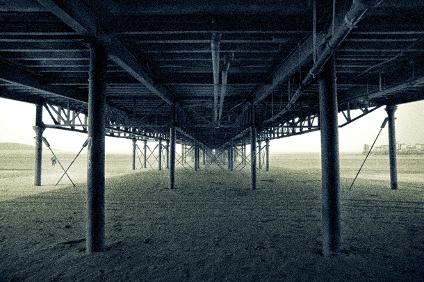

Что это значит? Основная идея всех творческих фотографий заключается в абстракции, то есть в абстрактном виденье реальности. Съемку в черно-белом режиме, можно рассматривать как способ съемки более абстрактной реальности. Черно-белая съемка это, пожалуй, самый простой вариант абстракции. На более продвинутом уровне вам следует научиться преподносить обычные вещи в необычном ракурсе, что бы зритель мог посмотреть на них по-другому, по-новому.
Специальное оборудование для камеры: Не требуется
Советы по съемке: Обратите внимание на узоры и оттенки, найдите что-то интересное и сконцентрируйтесь на этом объекте.
Что это значит? Ручная выдержка, это специальная настройка в камере, которая будет доступна только в ручном (M) режиме съемки. Она позволяет устанавливать очень длинную выдержку, от нескольких минут, до нескольких часов, если это возможно. Затвор остается открытым до тех пор, пока вы держите кнопку нажатой. При съемке в таких условиях, вам обязательно потребуется штатив, очень желательно воспользоваться удаленным управлением камерой, чтобы избежать дребезжания штатива в течение длительного воздействия на кнопку спуска затвора.
Специальное оборудование для камеры: Кабель для удаленного управления камерой.
Советы по съемке: Для создания интересного эффекта, хорошо было бы поснимать при ручной выдержке движущиеся автомобили, экспериментируя и фантазируя. Таким образом вы сможете создать оригинальные огненные узоры из фар и фонарей. Оптимальная выдержка приблизительно равна одной минуте, при f/11, ISO100.
Что это значит? Contre-Jour в переводе с французского означает «против света» и используется для обозначения изображений, снятых непосредственно напротив главного источника света. Если вы фотографируете таким образом, вы получаете темный силуэт главного объекта съемки. За частую, такие силуэты могут оказаться очень интересными, особенно если ваша модель будет в этот момент выполнить какие-либо интересные действия.
Специальное оборудование для камеры: Не требуется.
Советы по съемке: При съемке на восходе или на закате, следить за формами, которые могут создать интересный силуэт. Было бы красиво подчеркнуть силуэты линиями и формами за счет текстуры и детализации.
 Что это значит? Гарольд Эджертон,
один из первых фотографов, который начал использовать электронную вспышку и быструю съемку.
Благодаря его работе в этом направлении, сегодня мы можем снимать предметы, используя такую вспышку,
какой мы привыкли её видеть. На вспышке мы регулируем количество света, который она излучает,
и как долго она это делает. Минимальное значение, соответствует длительности приблизительно
1/50, 000 сек., с такой скоростью вы сможете сфотографировать каплю воды и брызги молока
достаточно легко. С помощью этой же техники, вы сможете снять летящую пулю, но это уже сложнее.
Преимуществом съемки жидкости заключается в том, что вы можете снимать столько, сколько вам это
потребуется, и это не доставит ни малейших трудностей и неудобств.
Что это значит? Гарольд Эджертон,
один из первых фотографов, который начал использовать электронную вспышку и быструю съемку.
Благодаря его работе в этом направлении, сегодня мы можем снимать предметы, используя такую вспышку,
какой мы привыкли её видеть. На вспышке мы регулируем количество света, который она излучает,
и как долго она это делает. Минимальное значение, соответствует длительности приблизительно
1/50, 000 сек., с такой скоростью вы сможете сфотографировать каплю воды и брызги молока
достаточно легко. С помощью этой же техники, вы сможете снять летящую пулю, но это уже сложнее.
Преимуществом съемки жидкости заключается в том, что вы можете снимать столько, сколько вам это
потребуется, и это не доставит ни малейших трудностей и неудобств.
Специальное оборудование для камеры: Внешняя вспышка, подключенная через горячий башмак, много запасных батарей и источник из которого будет капать вода...
Советы по съемке: Установите источник воды таким образом, что бы капли капали с некой периодичностью, настройте экспозицию вручную, так же отдайте предпочтение ручной фокусировке. Если все сделать правильно, то шанс получить красивый кадр достаточно высок, но все равно будьте готовы к неудачам.
Что это значит? «Рыбий глаз» это специальный широкоугольный объектив, который создает искаженное с углом 180 градусов, или больше. Есть два типа таких объективов: Диагональный (или «полнокадровый») — полученный кадр целиком занят изображением; Циркулярный — на полученном кадре изображение занимает не всю его площадь, а лишь вписанный круг. Снимок, показанный ниже сделан с помощью циркулярного объектива.
Специальное оборудование для камеры: В примере использовался объектив Sigma 4.5mm f/2.8 EX DC HSM Fisheye циркуляр, который стоит приблизительно 1000$, но можно найти рыбий глаз, который будет стоить не больше ста долларов.
Советы по съемке: При использовании циркулярного рыбьего глаза используйте частичный замер, будьте очень осторожны, что бы не поцарапать выпуклую линзу.
Что это значит? Еще до появления цифровых фотоаппаратов, термин «зерно» означало, гранулированный сгусток в структуре кинопленки. В цифровой фотографии, он означает видимые электронные шумы на изображении. Зернистость снимка, или шум растет вместе с тем, как растет значение ISO, и, хотя такой эффект, часто считают нежелательным, он может быть использован в творческой фотографии, для передачи настроения и создания текстуры.
Специальное оборудование для камеры: Не требуется
Советы по съемке: Поставьте высокое значение ISO при фотографировании, и попробуйте поснимать в монохромном, или черно-белом режиме.
Что это значит? Neutral Density (или ND) фильтр ограничивающий количество света, попадающего на матрицу камеры, что позволяет делать снимки при более низких скоростях затвора, для красивого размытия.
Специальное оборудование для камеры: Используйте ND фильтр (желательно ND9), возможно, вам придется использовать два фильтра сразу. Так же вам определенно понадобится штатив.
Советы по съемке: Установите скорость затвора, на значении равном 1 секунда, при небольшом движении в кадре и 10 секунд при более активном движении. Удаленное управление может помочь в избежание лишнего дребезжания камеры.
Что это значит? При использовании выдержки в условиях низкой освещенности, вы можете поймать даже самый незначительный лучик света, будь то фары от автомобиля, или яркий фейерверк. Если вы хотите научиться сами создавать подобные узоры, вам необходимо попрактиковаться в рисовании светом. Такие рисунки не получаются спонтанно, вам нужен источник света, который вы сможете контролировать, например, фонарик. Настроив и поставив камеру на штатив, и зажав кнопку спуска затвора, вы можете рисовать и писать целые предложения.
Специальное оборудование для камеры: Штатив и яркий фонарик. В примере использовались дешевые мини светодиодные фонарики, которые стоят не больше 4-х долларов, и как видите, результат очень хорош.
Советы по съемке: Лучший фон для света письма глухую стену или темное ночное небо. Убедитесь, что ваш факел перед камерой, то рисовать, писать, или запустить в передней части фона для создания различных трасс.
Что это значит? Использование фильтров еще при черно-белой съемке, обеспечивало появление красивых полутонов. Монохромный режим съемки на цифровых зеркальных камерах позволяет воссоздать эффекты фильтров. Если вы выберите желтый фильтр, то в результате получите более темное небо и белые облака, которые будут немного выделяться.
Специальное оборудование для камеры: Не требуется.
Советы по съемке: Снимайте в режиме RAW, вы все равно получите цветное изображение, но преобразовывать такой снимок будет намного удобнее, вы получите более точное моно преобразования в процессе редактирования.
Что это значит? При контурном освещении, объект подсвечивается сзади не ярким источником света, и за счет светлого контура выделяется из фона. Контурного освещения можно добиться от естественных солнечных лучей, или внешнего освещения, так же оно может быть создано в студии. Очень красиво с этим эффектом выделяется текстура меха и волос.
Специальное оборудование для камеры: При съемке в студии, вам потребуется одна лампа, которую следует правильно настроить.
Советы по съемке: Чтобы избежать бликов и низкого контраста, контурное освещение должно использоваться за объектом, немного выше камеры.